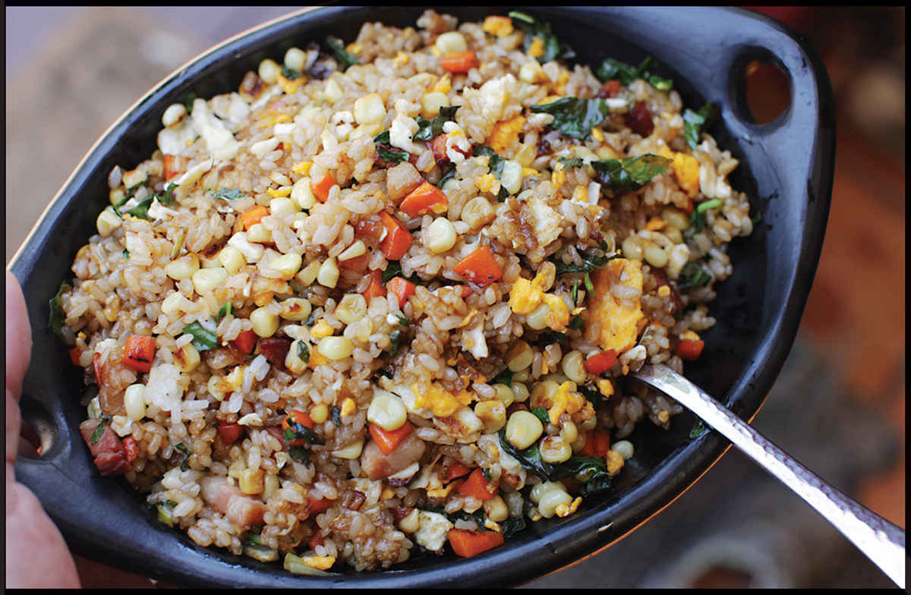

How to Prepare Ingredients for Fried Rice

The goal when preparing ingredients for fried rice is to cut and/or otherwise prep the ingredients to the point where they all take approximately the same amount of time to cook, which takes the guesswork out of properly cooking everything when stir-frying. Meaty bits should be cut small enough to cook through with only the briefest of stir-fries.
CATEGORY |
INGREDIENT |
METHOD |
Meat |
Cured meats such as ham, bacon, or Spam |
Cut into ¼-inch dice. |
Meat |
Cured sausage, such as lap cheong, chorizo, pepperoni, or salami |
Remove casing if necessary. Cut into ¼-inch dice or ¼-inch half- or quarter-moons. |
Meat |
Cooked chicken |
Shred into bite-sized pieces or cut into ¼-inch dice. |
Meat |
Ground meats, such as ground pork or chicken |
Marinate with a touch of soy sauce and a ½ teaspoon cornstarch per 4 ounces meat. |
Meat |
Leftover steaks or roasts |
Cut into ¼-inch dice. |
Seafood |
Shrimp |
Peel and cut into ½-inch pieces or leave whole if very small. |
Seafood |
Crabmeat |
Pick over and discard any bits of shell. |
Seafood |
Cooked salmon or tuna |
Flake gently with a fork. |
Seafood |
Salt cod |
Soak in clean water overnight, changing the water a few times over the course of the night. Flake with a fork. |
Seafood |
Hot-smoked fish, such as salmon, sablefish, or marlin |
Flake gently with a fork. |
Vegetable |
Asparagus |
Peel the stalks below the top 2 inches and cut or snap off the woody bottoms. Cut into ¼-inch lengths, either straight or on a bias, leaving the tips whole or split lengthwise. |
Vegetable |
Snap peas |
Break off the tops and bottoms with your fingers, pulling out any strings that come with them. Cut on a sharp bias into ¼-inch pieces. |
Vegetable |
Snow peas |
Break off the tops and bottoms with your fingers, pulling out any strings that come with them. Cut on a sharp bias into ¼-inch pieces. |
Vegetable |
English peas |
Remove peas from the pods. Blanch in boiling salted water for 2 minutes, then drain and transfer to an ice bath to cool. Dry well before stir-frying. |
Vegetable |
Green beans |
Break off the tops and bottoms with your fingers, pulling out any strings that come with them. Cut longer beans into bite-sized pieces. Blanch in boiling salted water for 2 minutes, then drain and transfer to an ice bath to cool. Dry well before stir-frying. |
Vegetable |
Fava beans |
Remove peas from the pods. Blanch in boiling salted water for 2 minutes, then drain and transfer to an ice bath to cool. Remove pale green skin from each bean and discard. Dry well before stir-frying. |
Vegetable |
Firm, crisp root vegetables, such as carrots, parsnips, turnips, radish, rutabaga, jícama, or water chestnut |
Cut into ¼-inch dice. |
Vegetable |
Corn |
Cut from the cob. When stir-frying, let the kernels sit without moving in the wok for a few moments to char lightly before tossing and repeating until charred all over. |
Vegetable |
Onions and shallots |
Cut into fine dice. |
Vegetable |
Scallions |
Trim and discard the roots. Cut white and pale green parts into ¼- to ½-inch segments. Reserve and slice the greens for garnish. |
Vegetable |
Leeks |
Trim and discard the roots and dark green tops. Split pale green and white parts into quarters lengthwise. Cut into ¼-inch segments. |
Vegetable |
Celery |
Peel any tough outer stalks. Split each rib lengthwise into 3 or 4 thin rods. Cut into ¼-inch segments. |
Vegetable |
Bell peppers and other chiles |
Cut into ¼-inch dice. |
Vegetable |
Zucchini and other tender squashes |
Cut into ¼-inch dice. |
Vegetable |
Cucumber |
Peel, split lengthwise, remove seeds with a spoon, split again lengthwise into quarters, then cut into ¼-inch segments. |
Vegetable |
Cabbage and brussels sprouts |
Thinly slice. |
Vegetable |
Broccoli and cauliflower |
Cut heads into ½-inch florets. Peel tougher bits of stem, then cut the stems into ¼-inch dice. |
Vegetable |
Mushrooms |
Thinly slice. |